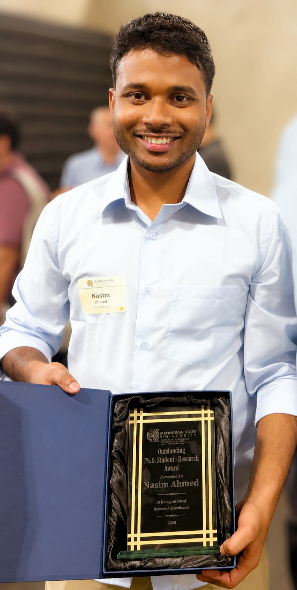

Featured Honor · 2026
Outstanding PhD Student Research Award
Department of Computer Science · Kennesaw State University
Recognition for research excellence and scholarly contributions as a PhD student in Computer Science.

Department of Computer Science · Kennesaw State University
Recognition for research excellence and scholarly contributions as a PhD student in Computer Science.
Georgia Tech · HeistAR multiplayer augmented-reality game.
ImmerseGT 2026 · Snap Spectacles / augmented-reality track.
Stanford Immerse the Bay XR Hackathon · Anu / Digital Anubis.
IEEE ISMAR 2025 · support for Doctoral Consortium and cybersickness research participation.
Ranked among the top students in the Department of Computer Science and Engineering, SUST.